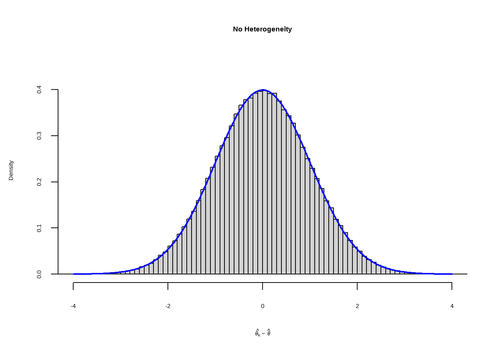
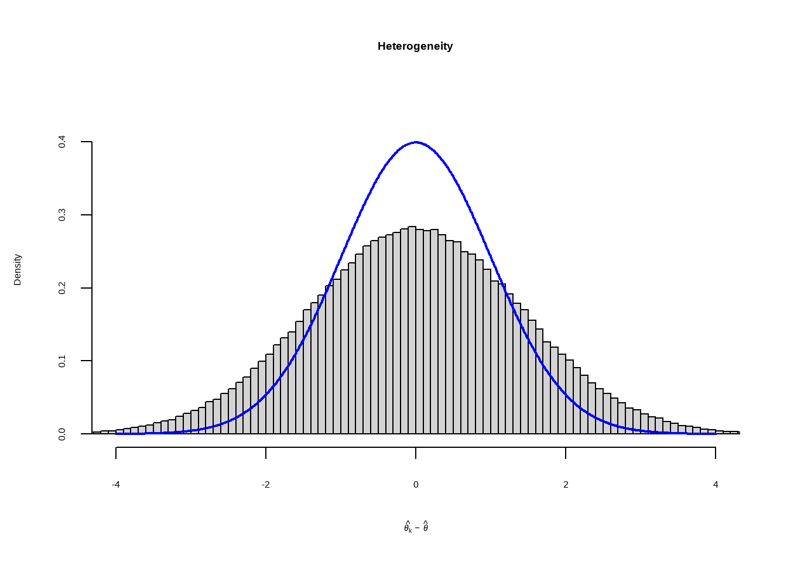
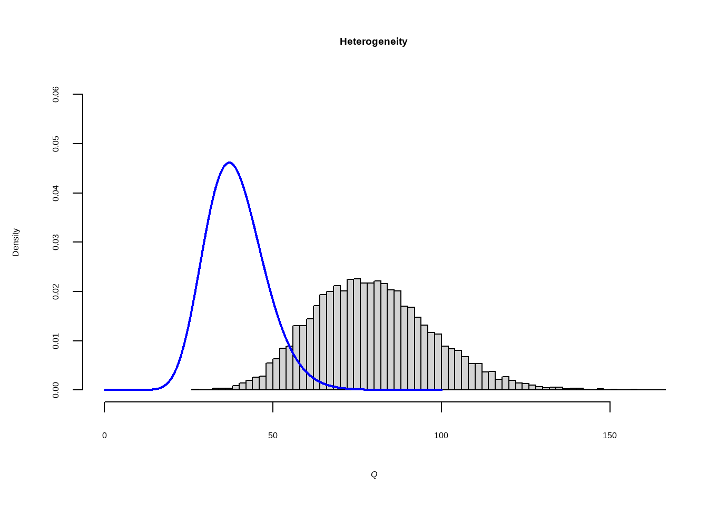
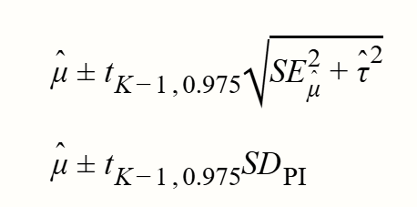
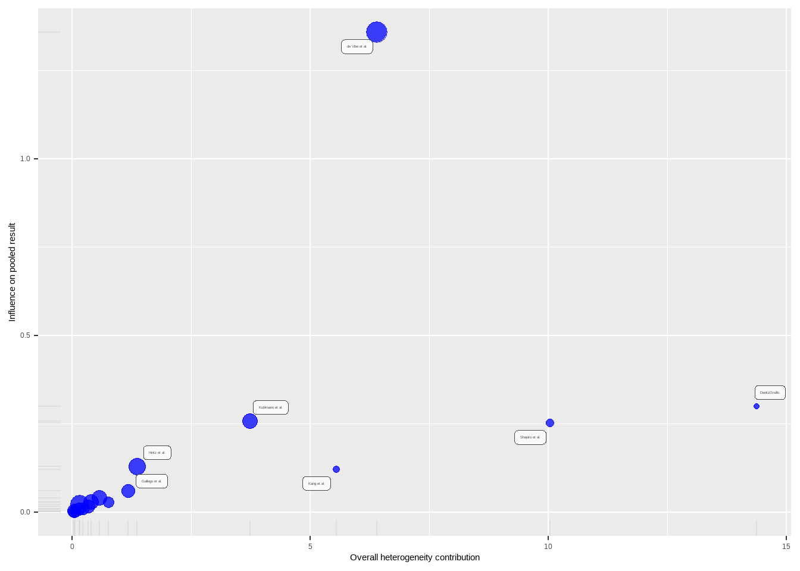
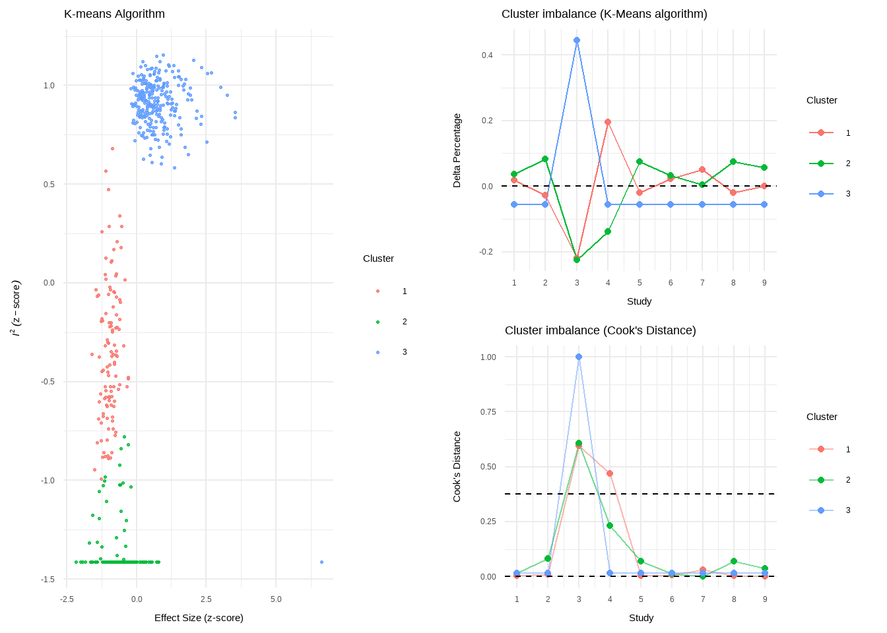
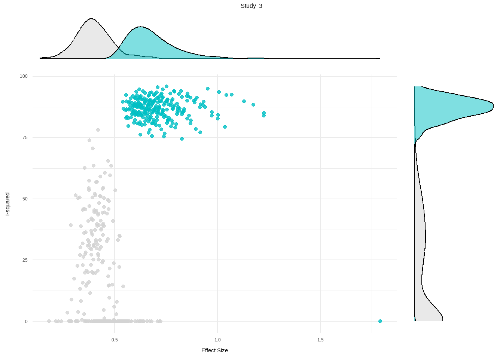

[1] -0.56047565 -0.23017749 1.55870831 0.07050839 0.12928774 1.71506499
[7] 0.46091621 -1.26506123 -0.68685285 -0.44566197 1.22408180 0.35981383
[13] 0.40077145 0.11068272 -0.55584113 1.78691314 0.49785048 -1.96661716
[19] 0.70135590 -0.47279141 -1.06782371 -0.21797491 -1.02600445 -0.72889123
[25] -0.62503927 -1.68669331 0.83778704 0.15337312 -1.13813694 1.25381492
[31] 0.42646422 -0.29507148 0.89512566 0.87813349 0.82158108 0.68864025
[37] 0.55391765 -0.06191171 -0.30596266 -0.38047100Between-Study Heterogeneity \(\zeta_k\)
Cochran’s Q
Cochran’s Q定义为每一项研究与总体效应的偏差加权平方和 （weighted sum of squares, WSS）。
\[ Q=\sum_{k=1}^K \omega_k(\hat \theta_k - \hat\theta)^2 \]
当研究之间没有异质性即\(\zeta_k =0\) 仅有抽样误差，假设
\[ \hat\theta_k-\hat\theta\sim N(0,1) \]
Show the code

假设研究之间存在异质性 （\(\zeta_k\)）和抽样误差（\(\epsilon_k\)）
Show the code

计算Q，假设加权=1
自由度为K−1的卡方分布（其中K是我们荟萃分析中的研究数量）
Show the code

Show the code

Higgins & Thompson’s \(I^2\)Statistic
\(I^2\) 是另一种估计异质性的方法，基于Cochran’s Q。 它被定义为不是由抽样误差引起的效应量的变异百分比
\(I^2\) 基于以下假设：在无异质性的零假设下，Q遵循具有K-1自由度的χ2分布。它以百分比的形式量化了在没有异质性（即K-1）的情况下，观察到的Q值超过预期Q值的程度。
\[ I^2=\frac{Q-(K-1)}{Q} \]
I2的值不能低于0%，因此如果Q恰好小于K-1，我们只需使用0而不是负值
Show the code
# Display the value of the 10th simulation of Q
Q_fixed[10][1] 35.85787Show the code
# Define k
k <- 40
# Calculate I^2
(Q_fixed[10] - (k-1))/Q_fixed[10][1] -0.08762746\(I^2\) = 0% 说明效应量的0%是由研究间的异质性引起的
Show the code
(Q_random[10] - (k-1))/Q_random[10][1] 0.5692061大约一半的差异是由于研究之间的异质性造成的。这也符合我们的预期，因为此示例中的变异同等程度地基于模拟的抽样误差和研究之间的异质性。
I2 = 25%: low heterogeneity
I2 = 50%: moderate heterogeneity
I2 = 75%: substantial heterogeneity.
\(H^2\) statistic
它描述了由Q测量的观察到的变化与由于采样误差引起的预期变化的比率
\[ H^2=\frac{Q}{K-1} \]
当研究之间没有异质性时，H2等于1（或更小）。大于1的值表示研究之间存在异质性。
Heterogeneity Variance \(\tau^2\)& Standard Deviation \(\tau\)
Show the code
# Pooled effect
m.gen$TE.random[1] 0.5771158Show the code
# Estimate of tau
m.gen$tau[1] 0.2863311我们看到了g=0.58 和τ=0.29. 根据这些数据，我们可以计算出 95% 真实效应量置信区间的下限和上限：0.58−1.96×0.29 = 0.01 和 0.58 1.96+×0.29 = 1.15。
Prediction intervals (PIs)
95% 预测区间的公式如下所示：

Review: Third Wave Psychotherapies
SMD 95%-CI %W(random)
Call et al. 0.7091 [ 0.1979; 1.2203] 5.0
Cavanagh et al. 0.3549 [-0.0300; 0.7397] 6.3
DanitzOrsillo 1.7912 [ 1.1139; 2.4685] 3.8
de Vibe et al. 0.1825 [-0.0484; 0.4133] 7.9
Frazier et al. 0.4219 [ 0.1380; 0.7057] 7.3
Frogeli et al. 0.6300 [ 0.2458; 1.0142] 6.3
Gallego et al. 0.7249 [ 0.2846; 1.1652] 5.7
Hazlett-Stevens & Oren 0.5287 [ 0.1162; 0.9412] 6.0
Hintz et al. 0.2840 [-0.0453; 0.6133] 6.9
Kang et al. 1.2751 [ 0.6142; 1.9360] 3.9
Kuhlmann et al. 0.1036 [-0.2781; 0.4853] 6.3
Lever Taylor et al. 0.3884 [-0.0639; 0.8407] 5.6
Phang et al. 0.5407 [ 0.0619; 1.0196] 5.3
Rasanen et al. 0.4262 [-0.0794; 0.9317] 5.1
Ratanasiripong 0.5154 [-0.1731; 1.2039] 3.7
Shapiro et al. 1.4797 [ 0.8618; 2.0977] 4.2
Song & Lindquist 0.6126 [ 0.1683; 1.0569] 5.7
Warnecke et al. 0.6000 [ 0.1120; 1.0880] 5.2
Number of studies: k = 18
SMD 95%-CI t p-value
Random effects model (HK) 0.5771 [ 0.3782; 0.7760] 6.12 < 0.0001
Prediction interval [-0.0542; 1.2084]
Quantifying heterogeneity (with 95%-CIs):
tau^2 = 0.0820 [0.0295; 0.3533]; tau = 0.2863 [0.1717; 0.5944]
I^2 = 62.6% [37.9%; 77.5%]; H = 1.64 [1.27; 2.11]
Test of heterogeneity:
Q d.f. p-value
45.50 17 0.0002
Details of meta-analysis methods:
- Inverse variance method
- Restricted maximum-likelihood estimator for tau^2
- Q-Profile method for confidence interval of tau^2 and tau
- Calculation of I^2 based on Q
- Hartung-Knapp adjustment for random effects model (df = 17)
- Prediction interval based on t-distribution (df = 17)在合并效应的直接作用下，我们看到了预测区间。其范围为g=-0.06至1.21。这意味着，根据目前的证据，未来的一些研究可能会发现负面的治疗效果。然而，间隔相当宽，这意味着也可能产生非常高的效果。
异常值
删除
Show the code
dmetar::find.outliers(m.gen)Identified outliers (random-effects model)
------------------------------------------
"DanitzOrsillo", "Shapiro et al."
Results with outliers removed
-----------------------------
Review: Third Wave Psychotherapies
Number of studies: k = 16
SMD 95%-CI t p-value
Random effects model (HK) 0.4528 [0.3257; 0.5800] 7.59 < 0.0001
Prediction interval [0.1705; 0.7352]
Quantifying heterogeneity (with 95%-CIs):
tau^2 = 0.0139 [0.0000; 0.1032]; tau = 0.1180 [0.0000; 0.3213]
I^2 = 24.8% [0.0%; 58.7%]; H = 1.15 [1.00; 1.56]
Test of heterogeneity:
Q d.f. p-value
19.95 15 0.1739
Details of meta-analysis methods:
- Inverse variance method
- Restricted maximum-likelihood estimator for tau^2
- Q-Profile method for confidence interval of tau^2 and tau
- Calculation of I^2 based on Q
- Hartung-Knapp adjustment for random effects model (df = 15)
- Prediction interval based on t-distribution (df = 15)影响分析
Show the code
m.gen.inf <- dmetar::InfluenceAnalysis(m.gen, random = TRUE)[===========================================================================] DONE Show the code
plot(m.gen.inf, "baujat")
Show the code
plot(m.gen.inf, "influence")

GOSH Plot Analysis
Graphic Display of Heterogeneity (GOSH)
GOSH 诊断图
Show the code
#' @usage gosh.diagnostics(data, km = TRUE, db = TRUE, gmm = TRUE,
#' km.params = list(centers = 3,
#' iter.max = 10, nstart = 1,
#' algorithm = c("Hartigan-Wong",
#' "Lloyd", "Forgy","MacQueen"),
#' trace = FALSE),
#' db.params = list(eps = 0.15, MinPts = 5,
#' method = c("hybrid", "raw", "dist")),
#' gmm.params = list(G = NULL, modelNames = NULL,
#' prior = NULL, control = emControl(),
#' initialization = list(hcPairs = NULL,
#' subset = NULL,
#' noise = NULL),
#' Vinv = NULL,
#' warn = mclust.options("warn"),
#' x = NULL, verbose = FALSE),
#' seed = 123,
#' verbose = TRUE)Show the code
res.gosh.diag <- dmetar::gosh.diagnostics(res.gosh,
km.params = list(centers = 2),
db.params = list(eps = 0.08,
MinPts = 50))Show the code
data("m.gosh",package = "dmetar")
res.diag <-dmetar::gosh.diagnostics(m.gosh)
Perform Clustering...
|==========================================================================================| DONE Show the code
res.diag GOSH Diagnostics
================================
- Number of K-means clusters detected: 3
- Number of DBSCAN clusters detected: 4
- Number of GMM clusters detected: 4
Identification of potential outliers
---------------------------------
- K-means: Study 3, Study 4
- DBSCAN: Study 3, Study 4
- Gaussian Mixture Model: Study 3Show the code
plot(res.diag)




Review: Third Wave Psychotherapies
SMD 95%-CI %W(random) exclude
Call et al. 0.7091 [ 0.1979; 1.2203] 4.6
Cavanagh et al. 0.3549 [-0.0300; 0.7397] 8.1
DanitzOrsillo 1.7912 [ 1.1139; 2.4685] 0.0 *
de Vibe et al. 0.1825 [-0.0484; 0.4133] 0.0 *
Frazier et al. 0.4219 [ 0.1380; 0.7057] 14.8
Frogeli et al. 0.6300 [ 0.2458; 1.0142] 8.1
Gallego et al. 0.7249 [ 0.2846; 1.1652] 6.2
Hazlett-Stevens & Oren 0.5287 [ 0.1162; 0.9412] 7.0
Hintz et al. 0.2840 [-0.0453; 0.6133] 11.0
Kang et al. 1.2751 [ 0.6142; 1.9360] 2.7
Kuhlmann et al. 0.1036 [-0.2781; 0.4853] 8.2
Lever Taylor et al. 0.3884 [-0.0639; 0.8407] 5.8
Phang et al. 0.5407 [ 0.0619; 1.0196] 5.2
Rasanen et al. 0.4262 [-0.0794; 0.9317] 4.7
Ratanasiripong 0.5154 [-0.1731; 1.2039] 2.5
Shapiro et al. 1.4797 [ 0.8618; 2.0977] 0.0 *
Song & Lindquist 0.6126 [ 0.1683; 1.0569] 6.1
Warnecke et al. 0.6000 [ 0.1120; 1.0880] 5.0
Number of studies: k = 15
SMD 95%-CI t p-value
Random effects model (HK) 0.4819 [0.3595; 0.6043] 8.44 < 0.0001
Prediction interval [0.3623; 0.6016]
Quantifying heterogeneity (with 95%-CIs):
tau^2 < 0.0001 [0.0000; 0.0955]; tau = 0.0012 [0.0000; 0.3091]
I^2 = 4.6% [0.0%; 55.7%]; H = 1.02 [1.00; 1.50]
Test of heterogeneity:
Q d.f. p-value
14.67 14 0.4011
Details of meta-analysis methods:
- Inverse variance method
- Restricted maximum-likelihood estimator for tau^2
- Q-Profile method for confidence interval of tau^2 and tau
- Calculation of I^2 based on Q
- Hartung-Knapp adjustment for random effects model (df = 14)
- Prediction interval based on t-distribution (df = 14)